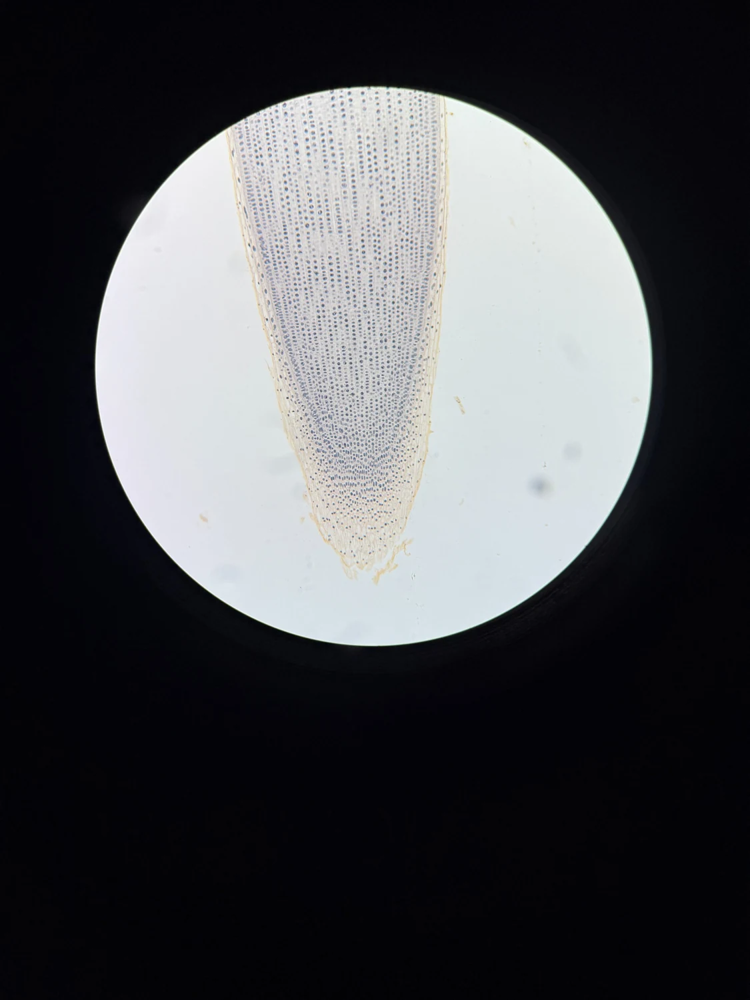

Cell Cycle Quest.
Train first with diagrams. Then scan a real onion root tip field, classify cells, count each stage, and export a graph for your lab report.
1. Mission briefing
This activity is designed as a two-part investigation. Students complete a short guided practice set first, then move into a systematic serpentine scan of the real microscope field to count cells in each stage.


Practice set ready. When you begin, the game will launch with diagram training before the real field scan.
Practice results are formative. The graph and counts at the end come from the real slide scan.
Identify the phase
In practice mode, answer correctly to lock in the stage. In scan mode, classify only the highlighted cell and continue in the fixed serpentine sequence.
You’ve got this. Build your streak.
Phase identification guide
Live field tally
2. Nice work — now scan the real slide
Next comes the real investigation. The highlighted rectangle will move through the field in a serpentine scan — down one column, up the next — so your counting stays systematic.
3. Analyze your data
Use count ÷ total × 100 to calculate percent of cells. Estimate hours per phase using count ÷ total × 24. This assumes a representative snapshot of an asynchronously cycling population; it does not directly measure individual cell duration.
| Phase | Count | Percent (%) | Estimated hours |
|---|
4. Build your graph
The exported figure includes your session ID and completion timestamp.
5. Interpret your findings
Which phase was most common? What does that imply about its relative duration? Why might estimates differ between fields of view? Write your interpretation in your lab report.
The completion record uses the browser's clock. It is useful for documenting work but is not tamper-proof or independent proof of authorship.